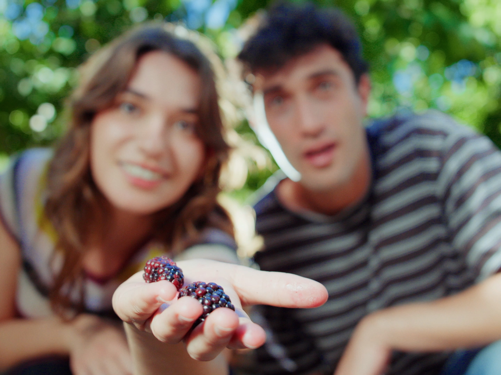
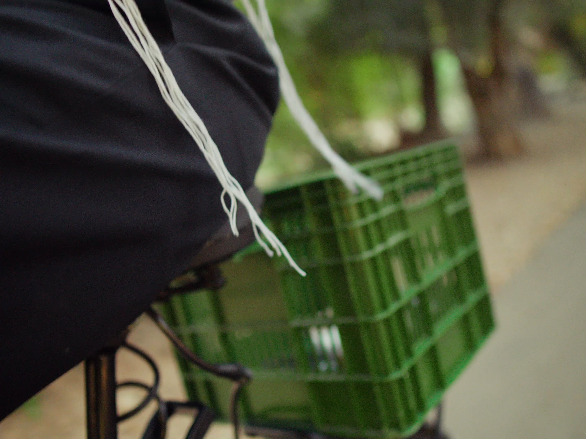
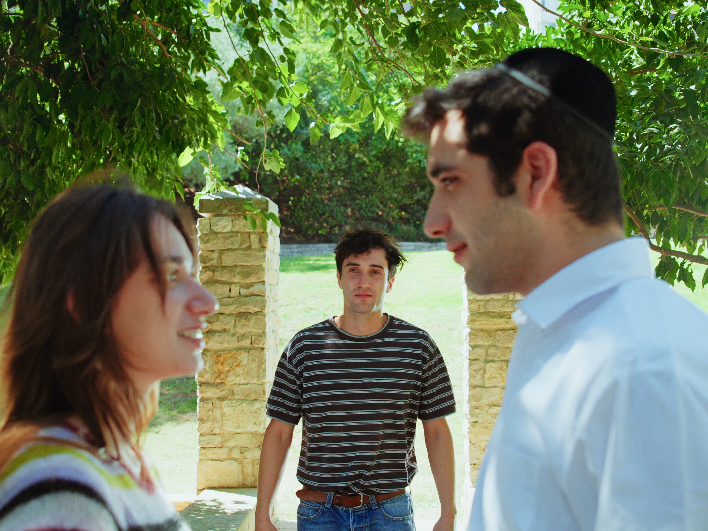
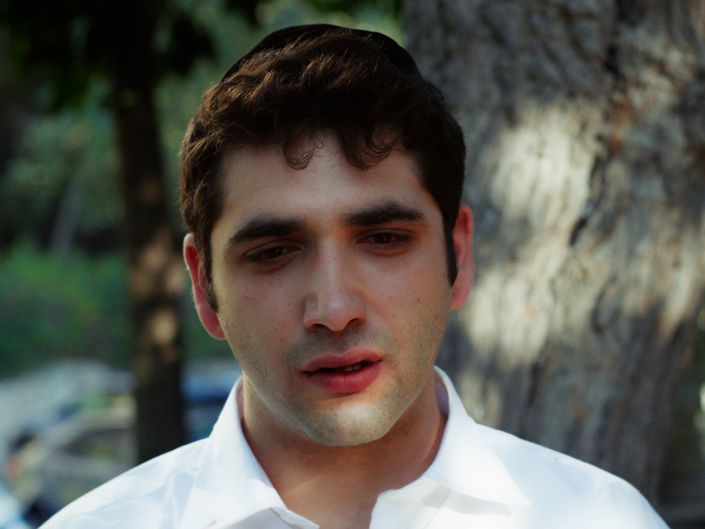
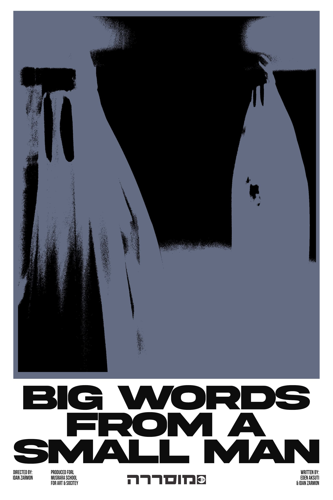
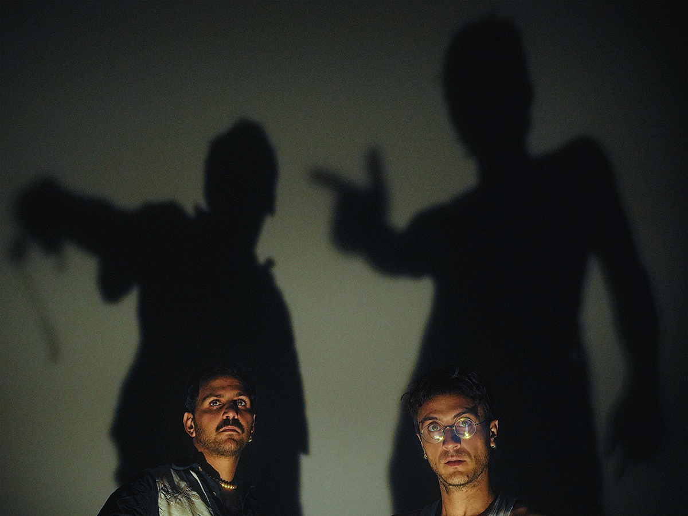
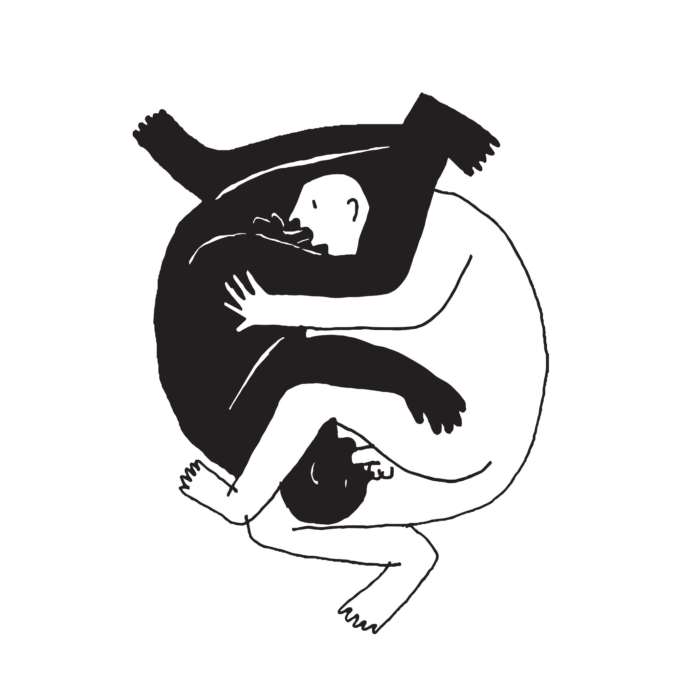
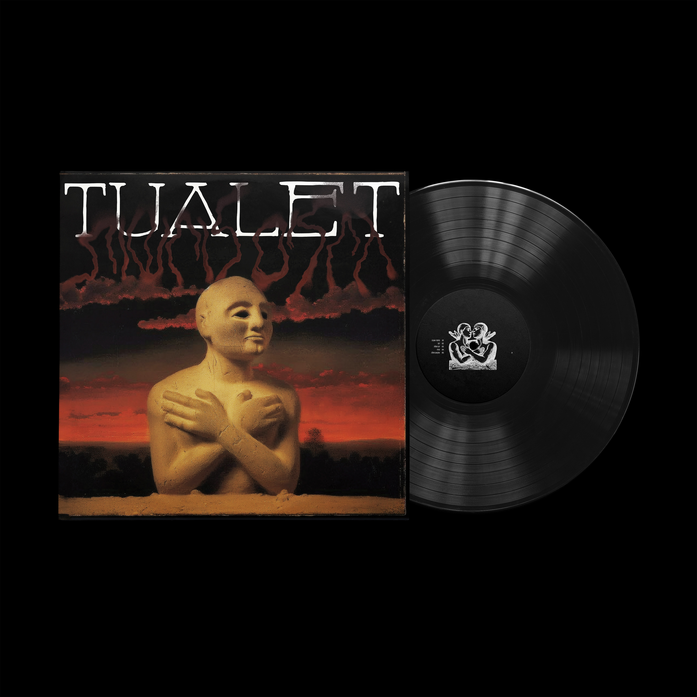
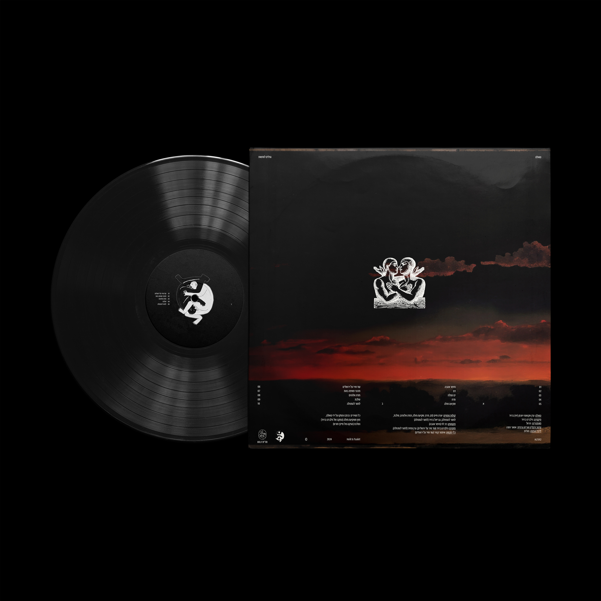
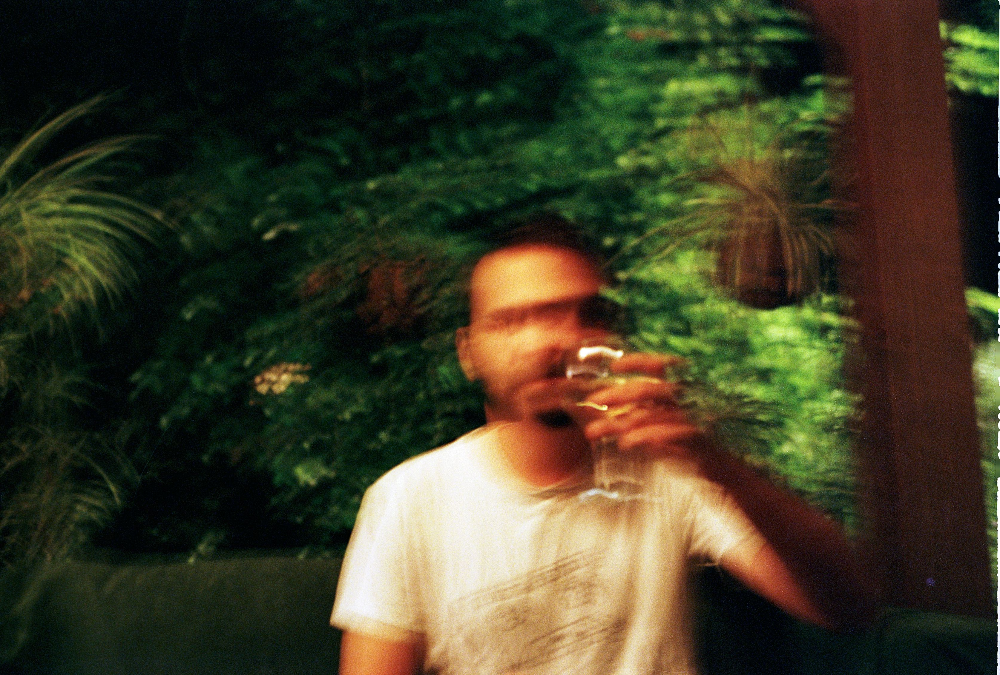

Film Works
Eggshell (2026 – in postproduction) — Writer and Director
Nevo, A 26 year old video editor hides inside his apartment, obsessively polishing a glossy real estate video for his mother. The images promise safety, order, and beautiful homes far away from the noise of the street below. But a homeless man lingering outside his window begins to fracture that illusion. Sounds bleed inward. Focus dissolves. The man becomes an unbearable presence, then an obsession. In desperation, the editor calls the police and hurls eggs at him, only to recognize himself in the figure he fears. Drawn outside, he descends and trades places with the stranger, collapsing into the life he tried to erase.
Sweet Talk (2025, 15 min) — Writer and Director





A short film written as part of my studies at the Sam Spiegel Film & Television School and independently produced.
The film follows Yoav and Yaara, a young couple who, on Yom Kippur, find themselves in an empty park in Jerusalem. There, they encounter a mysterious orthodox man whose presence unsettles their bond and exposes dynamic of control, desire, and fear of the other.
Screened at Yozmat Smadar Film Festival, Jerusalem.
Link
Password: sweettalk2025
The film follows Yoav and Yaara, a young couple who, on Yom Kippur, find themselves in an empty park in Jerusalem. There, they encounter a mysterious orthodox man whose presence unsettles their bond and exposes dynamic of control, desire, and fear of the other.
Screened at Yozmat Smadar Film Festival, Jerusalem.
Link
Password: sweettalk2025
Propaganda (2024, 2 min) — Writer, Director and Actor
A short film that received a development grant from the Makor Foundation as part of the “Pulse Check” program. It premiered at the project’s opening event and was later featured on the Makor Foundation’s website.
The film tells the story of Avi Valush, who, upon hearing a siren, is driven in two parallel directions: one toward the shelter to seek cover, and the other toward an impassioned, ambivalent speech against an unknown entity that has taken over his life and compels him to act against his will.
Through Avi’s prophetic outburst, the existential anxiety of an entire nation is revealed Link
The film tells the story of Avi Valush, who, upon hearing a siren, is driven in two parallel directions: one toward the shelter to seek cover, and the other toward an impassioned, ambivalent speech against an unknown entity that has taken over his life and compels him to act against his will.
Through Avi’s prophetic outburst, the existential anxiety of an entire nation is revealed Link
Big Words From A Small Man (2022) — Screenwriter and Executive Producer

A student film that won the Jerusalem Mayor’s Award (Director: Idan Zarmon). The film was screened as part of the graduation exhibition at the Musrara Multidisciplinary School of Art, as well as at Cinema Shablulim, IndieNegev Festival, and other venues.
Through four moments in time, the film presents a surreal and grotesque portrait of Jerusalem — tangled, sacred, and confused.
Link
Through four moments in time, the film presents a surreal and grotesque portrait of Jerusalem — tangled, sacred, and confused.
Link
Screenwriting
I began screenwriting four years ago — it started as an experiment for Idan
Zarmon’s (dear friend and active artist) student film, and continued to studies
at Sam Spiegel Film and Television School.
Faith
My final project at Sam Spiegel. A 6-episode drama about a destructive relationship
between a young male teacher and a religious female student.
Inheritance
A short film. Over the course of a scorching summer day in Haifa, three men —
grandfather, father, and son — find themselves on the thin line between life
and death, honor and love. All of it circling a meager, pitiful inheritance.
Video Editing
Ecoute — Live Session
Kleptomanim — Live Session
Bein HaHarisot — Live Session
Long Time No See — Promotional Video
Prose and Poetry
“In The Shadow”

A poem published in Iton 77
“Aboutbul Can’t Get Up”


A self-published short story about a man who can’t stand up by himself.
“How to Speak Under the Crushing Force of the Fist”


Published as part of
Long Time No See
art magazine and exhibition by Daria Shoshani and Lorenz Kunath.
“Compassion is a Dish Served Cold”
A speech presented as part of Naomi Ben Or’s MA final project
“Evening of Talks” at LUCA School of Arts, screened at
“Fuge” Leipzig
Music
I’m an active member of two Jerusalem-based bands, Bein HaHarisot and Tualet.
Performed in festivals and venues across Israel, including IndieNegev Festival, Desert Rock Festival, HaFeder, Levontin 7, and others.
Performed in festivals and venues across Israel, including IndieNegev Festival, Desert Rock Festival, HaFeder, Levontin 7, and others.
Bein Haharisot


Translated to “In the Ruins” — a post-punk hard rock band. Through
repetitive rhythms, abrasive guitars, and sharp-edged lyrics, the band explores themes
such as urban oppression, borders, and violence — with a focus on Jerusalem as a
confined space of coercion and restriction.
Tualet

An electronic duo that blends trip-hop, dub, and psychedelic rock with darkly humorous
and grotesque lyrics. We like to laugh at the human condition — embracing the inner
child, flirting with the darker urges, and ultimately losing the game on purpose.
We started making music together in 2019 in a crumbling apartment in Haifa, later moving between home studios and shaping a unique sound in Israel’s alternative music scene. Our debut EP “Balayfa” was released on vinyl in 2023 through Garzen Records. In 2025, our first full-length album will be released under Holit Records, featuring ten tracks that move between intimacy and defiance.
We started making music together in 2019 in a crumbling apartment in Haifa, later moving between home studios and shaping a unique sound in Israel’s alternative music scene. Our debut EP “Balayfa” was released on vinyl in 2023 through Garzen Records. In 2025, our first full-length album will be released under Holit Records, featuring ten tracks that move between intimacy and defiance.




About
I am a multidisciplinary creator: screenwriter, director, editor, and musician.
Born in 1996. I hold a BA in Comparative Literature and Philosophy from the Hebrew University of Jerusalem, and I’m a graduate of the Screenwriting Program at the Sam Spiegel Film & Television School.
My work is driven by a destructive love for language, its rhythm, richness, aggression and contradictions. By the spark that is born when words meet images and sound.

Contact